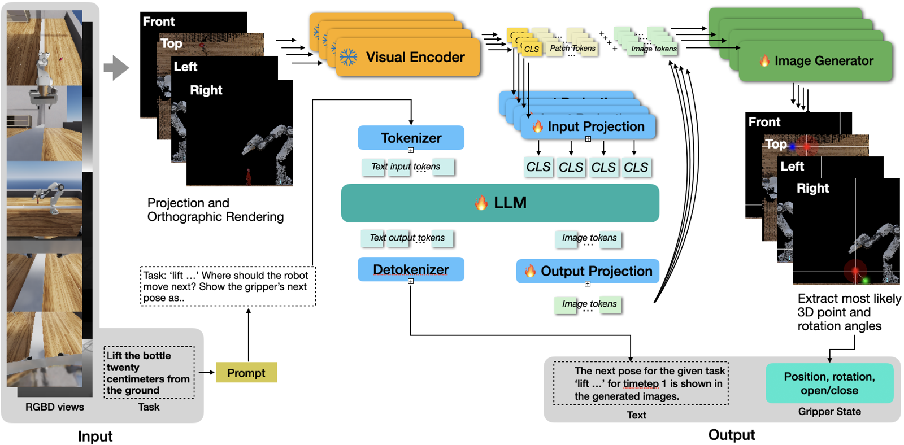
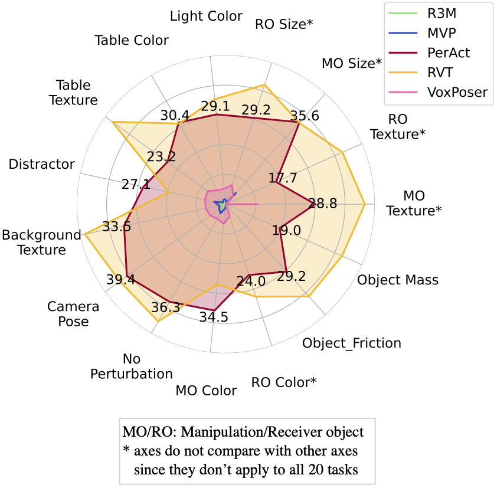
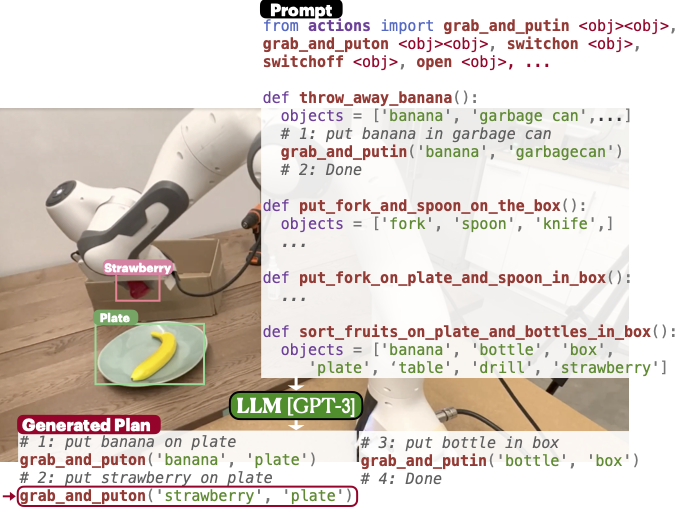
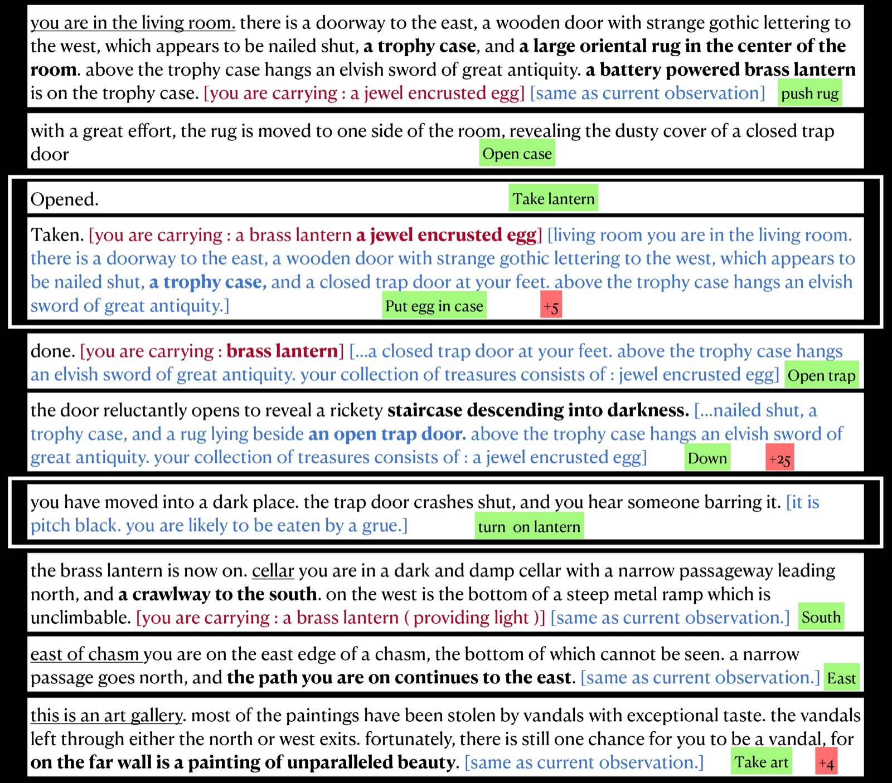
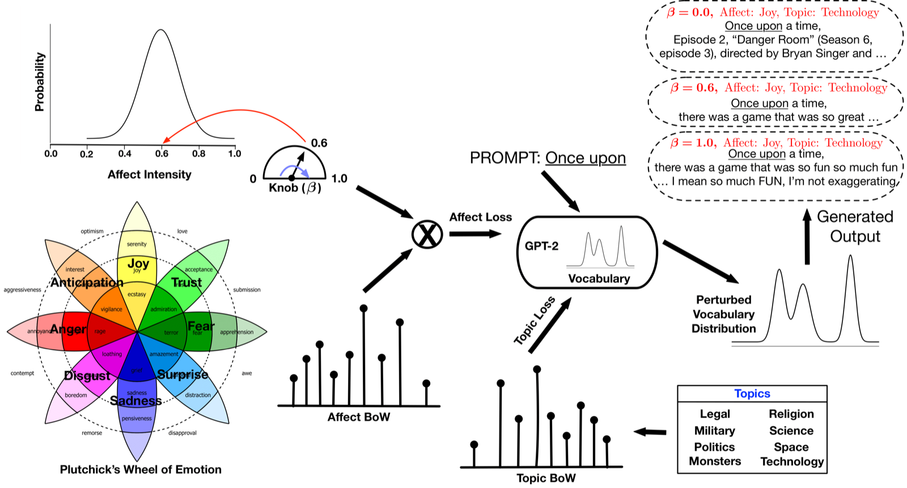

Adapting Large Pre-Trained Models for Generalized Robot Reasoning and Control
Robotics: Science and Systems Pioneers (RSS Pioneers) 2025
Profile
I am a Research Scientist at NVIDIA Cosmos Lab, where I work on generative physical AI and world models for robots. I completed my PhD in Computer Science at USC, advised by Prof. Jesse Thomason. My research interests are across NLP and robotics; primarily around why (how) language is necessary for (can be utilized in) robot learning and embodied AI. I think that problems under Embodied AI are yet more foundational, and hold deep-rooted benefits for the society.
Previously, I was an undergrad at IIT Kanpur, where I worked on topics relating to NLP and theoretical ML with Prof. Ashutosh Modi (IIT Kanpur), and Prof. Pengtao Xie (UC San Diego). I have spent some summers interning at Adobe Research, where I also received Adobe India WIT Scholarship 2020, NVIDIA Robotics Research, and Amazon Frontier AI and Robotics. I was also selected as a member of the RSS Pioneers 2025 Cohort.
PhD, Computer Science, 2021–2026
University of Southern California, LA, CA
B.Tech., double major in Computer Science and Chemical Engineering, 2016–2021
Indian Institute of Technology Kanpur, India
News & service
Joined NVIDIA Cosmos Lab. Super excited to build generative physical AI for robots!
OG-VLA accepted to IROS 2026!
Passed thesis defense at USC!
Passed thesis proposal at USC!
Selected as a member of the RSS Pioneers Cohort 2025!!!
I will be interning at Amazon Frontier AI and Robotics, San Francisco in Summer'25!
Passed qualification exam at USC and upgraded to being a PhD candidate!
Invited panelist in 2024 Beyond the Ph.D. and Postdoctoral Career Conference, USC.
Published Language Models meet Classical Planners to make smarter Robot Task Plans in the USC RASC blog.
The Colosseum is accepted to RSS 2024 and is open-source now!
Interviewed for ProgPrompt for a Scientific American article!
Released The Colosseum: A Benchmark for Evaluating Generalization for Robotic Manipulation.
Selected as Finalist for the Qualcomm Innovation Fellowship with Jesse Zhang!
I will be interning again at NVIDIA SRL in Summer'24 with Valts and Animesh!!
I received RAS Travel Grant to attend ICRA 2023.
Self-supervised 3D representation learning is accepted to Pretraining4Robotics workshop @ ICRA 2023.
I will be interning at NVIDIA AI Robotics Research Lab, Seattle in Summer'22, advised by Valts and Animesh!
Work on Interactive Fiction Games accepted as extended abstract at AAMAS'22. [arXiv].
Joined the CS PhD program at USC as a member in the GLAMOR Lab with 1 year of USC Grad Fellowship!
Work on Affective Text Generation accepted as long paper at COLING'20. [arXiv]
Adobe released a blog on my internship at Adobe Research, India! [Read here]
Work on Differentially-private Federated Neural Architecture Search accepted at FL-ICML'20. [arXiv]
Received Adobe India WIT Scholarship 2020! [Adobe’s Blog][Getting-through-it Advice]
Co-organizing the Workshop on Human-Robot Dialogue at IROS 2026.
Co-organizing From Data to Decisions: VLA Pipelines for Real Robots, ICRA 2026.
Serving as Program Committee Chair, RSS Pioneers 2026, RSS 2026. Looking forward to all the prospective applications!
Co-organizing SemRob Workshop, RSS 2025.
Co-organizing 3D VLMs for Robotics, CVPR 2025.
Co-organizing Language and Robot Learning Workshop, CoRL 2024.
Co-organizing vision-and-dialogue TEACh TATC Challenge @ Embodied AI Workshop, CVPR'22 and CVPR'23.
Research
Full list on Google Scholar.
Robotics: Science and Systems Pioneers (RSS Pioneers) 2025

IEEE/RSJ International Conference on Intelligent Robots and Systems (IROS) 2026

Robotics: Science and Systems (RSS) 2024
Also at Future Roadmap for Manipulation Skills @ ICRA 2024, Embodied AI @ CVPR 2024

International Conference on Robotics and Automation (ICRA) 2023
Also at LaReL @ NeurIPS 2022, LangRob @ CoRL 2022
Extended version in Autonomous Robots (AR) 2023 (Large Language Models in Robotics)

International Conference on Autonomous Agents and Multiagent Systems (AAMAS) 2022 (Extended Abstracts)

Get in touch